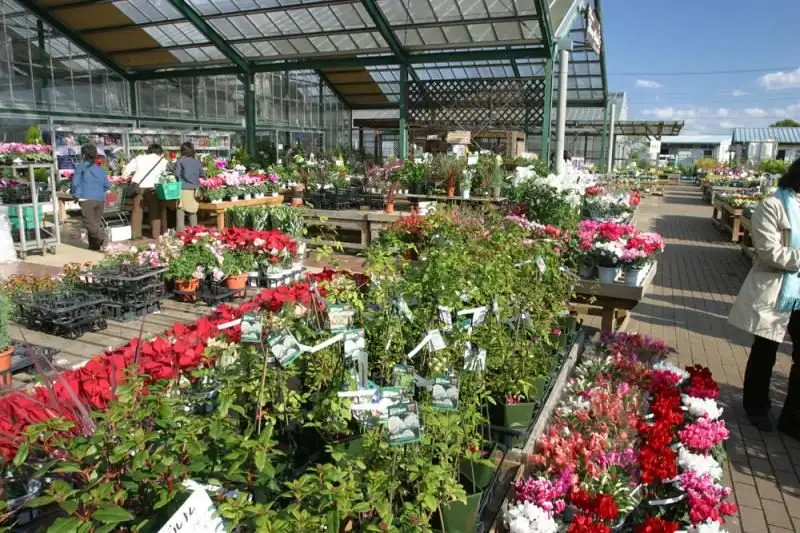
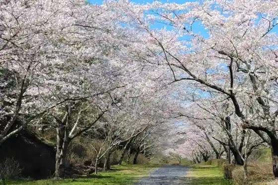
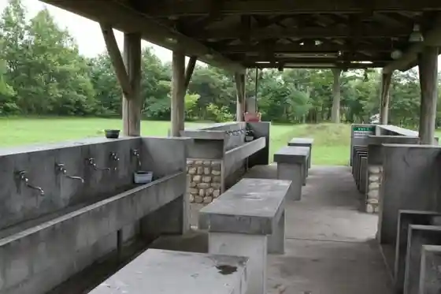
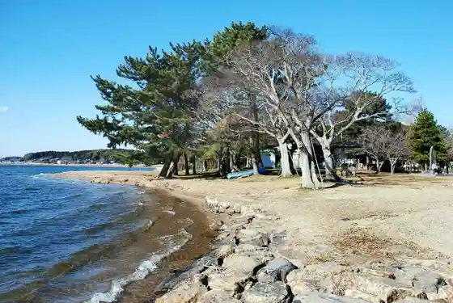
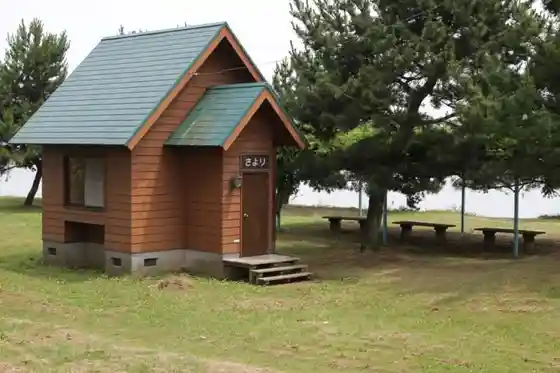

Japan / Ibaraki / Ibarakimachi
Ibarakimachi
Ibarakimachi · Ibaraki
Ibarakimachi
Highlighted on the Ibaraki map.

Sights
Hinuma Nature Park

Hinuma Nature Park Campground

Pogatto Farm Dokidoki Ibarakimachi Mise
Oya Sawa Park

Ko Ura Park

Obata Kitayama Haniwa Seisaku Iseki (Kuni Shitei Historic Site)
Oto no Sakura
Mito Hakkei (Ko Ura Akizuki)
Fowado Marinsupotsu
JA Mito Guriinhausu Hinuma
JA Mito Ibarakimachi Chiku Nosambutsu Chokubai Tokoro (Sakura)
Shina no
Soba Kichi Mokubu Mise
Shokuji Kan Hachiman Taro
Hinuma Mizutori Shitchi Center (Tenji Shisetsu)